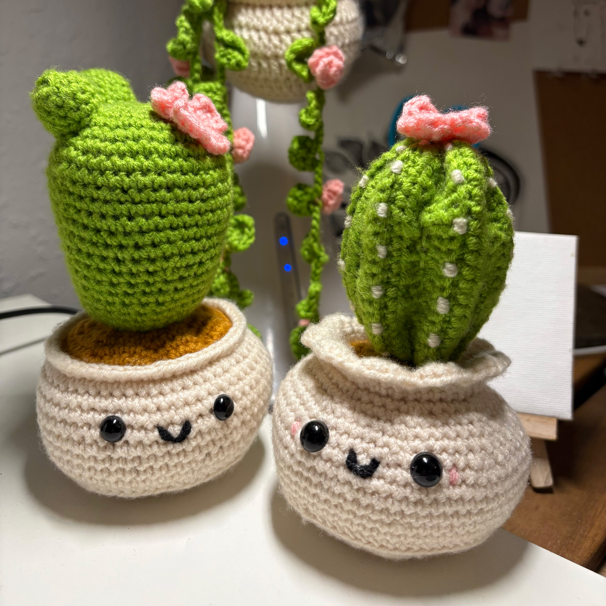
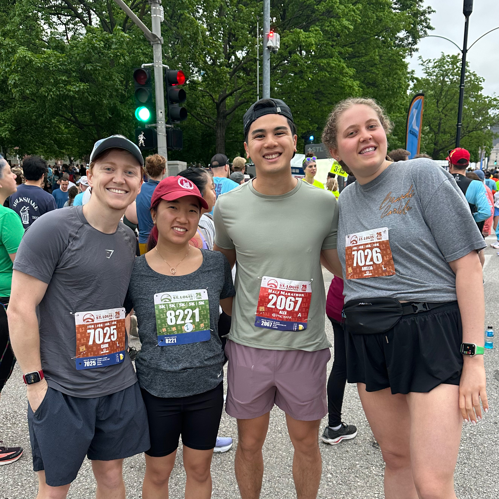

A little about me
My name is Katherine Seunghe Han, and I'm a Graphic Designer based in St. Louis. I recently worked as a Marketing Designer at Dial Zero Marketing. I strive to create meaningful experiences, from interactive websites to narrative-driven branding, and I believe beautiful and thoughtful design is one of the best ways to improve quality of life.

Outside of graphic design, I love singing, crocheting, and watching anime. I also force myself to run sometimes.

